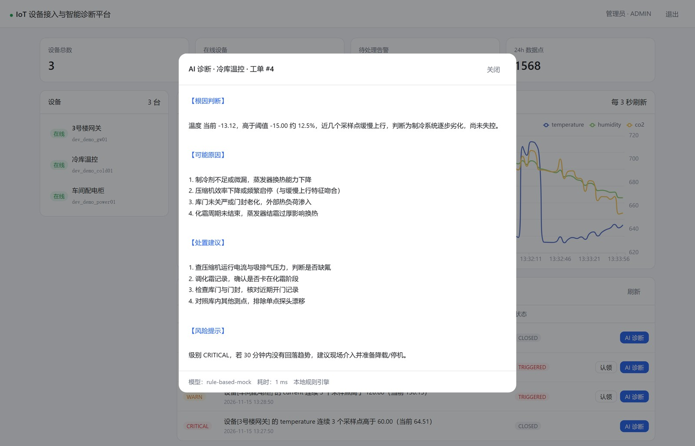
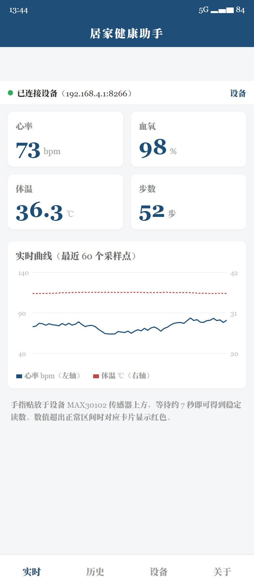

06在用的模型
04常驻 Agent
05已记录实验
01大模型认证（ACA）
01AI 能力栈
这里真正在运转的东西。
四层：调度模型、驱动 Agent、产出素材、验证结果。
01
模型调度
Routing- 任务分流：代码 / 长文 / 诊断
- 多模型交叉验证（3 个以上）
- 长上下文：论文级文档
- 结构化提示 · JSON 约定
- 超时降级 · 本地规则兜底
02
Agent 工程
Agents- Claude Code · DeepSeek Harness
- AutoClaw · WorkBuddy
- 读仓库 → 打补丁 → 跑通 → 自检
- 技能包 · 可复用工作流
- 会话回放 · 操作留痕
03
生成管线
Generation- Seedream 底图生成
- Seedance 视频分镜
- 程序排版 · 文字不出错
- 一套栅格出整套物料
- 上线前人工审核
04
验证与留痕
Evidence- 先跑用例，再写结论
- 数字回到实验记录
- 线上部署后逐项复核
- 事实复核，而非假定
- 已知限制写清楚
02实验记录
五次实验，五件产物。
每条都写清楚：跑了什么、产出了什么、在哪儿能自己核对。
EXP-01
已开源
→
EXP-02
可回放
→
EXP-03
已上线
→
根因诊断 · 带硬超时
通义千问（DashScope）接进 IoT 平台做根因诊断，12 秒拿不到就降级本地规则——LLM 是加速器，不是依赖项。
一次被完整录下的 AI 结对
SmartFridge 从零到跑通，全程用 Claude Code 在镜头前完成——92 秒未剪辑实录，就在项目页。
按源码重建小程序界面
实时页与历史页按真实 WXSS 与 Canvas 代码重建——是对着源码做的界面还原，不是画出来的效果图。
EXP-04
已交付
33 张成套物料 · 文字零乱码
萘斯医美：AI 出底图，程序排中文。四套版式共用一个栅格——从不指望生成模型把字写对。
EXP-05
在线
这个站点，一个会话建成
盘点 → 构建 → 动效 → 部署验证，由 Agent 在人工复核下跑完。你现在读的就是产物。
03成果展示
从跑着的系统里截下来的。
点任意一张放大；每张都对应一个能点开的项目。




04互动说明
选一个任务，看它交给谁。
这是我实际在用的分工表，不是排行榜。五个任务类型，点开看理由。
ROUTE
Claude Code
READY
$
05怎么读这一页
每条说法，都留了核对方式。
实验室里会出现三种标签，各自代表什么，写在这里。
- 可回放有录像或会话日志：看得到过程，不只看结果。
- 可克隆仓库公开：拉下来、编起来、用例自己跑。
- 可复核数字能回到实验记录；限制条件也一并写明。
模型名按真实使用列出，不排座次；生成内容一律人工审核后才使用；AI 生成的示意图不上项目页。